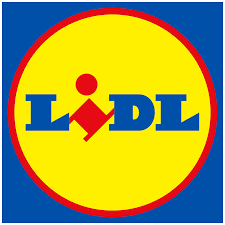
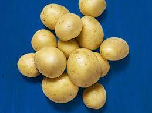

Lidl

Lidl je německý řetězec diskontních prodejen, který působí ve 30 zemích Evropy a ve Spojených státech amerických.
Stejně jako Kaufland je Lidl součástí skupiny Schwarz-Gruppe, která je největší maloobchodní společností v Evropě.
Technologie
V Lidlu lze také nálézt technologie na prodej. Jako třeba elektronická pumpa.

Brambory
Brambory zde také můžeme nakoupit.
